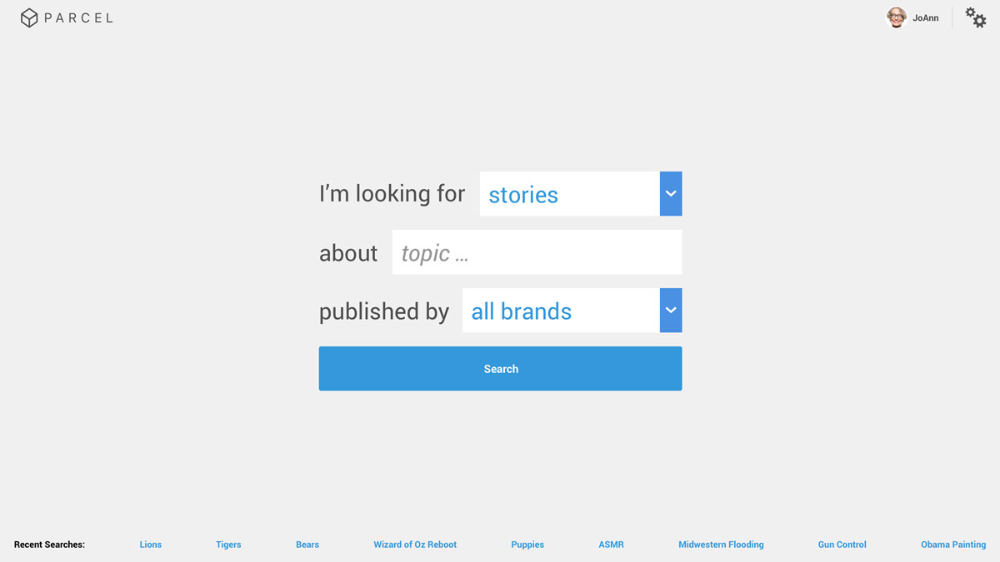
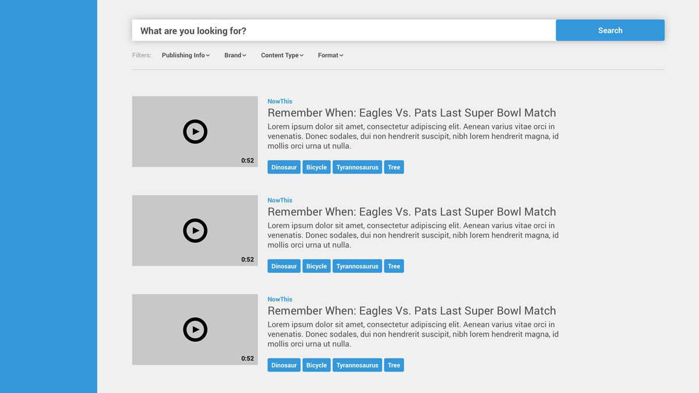
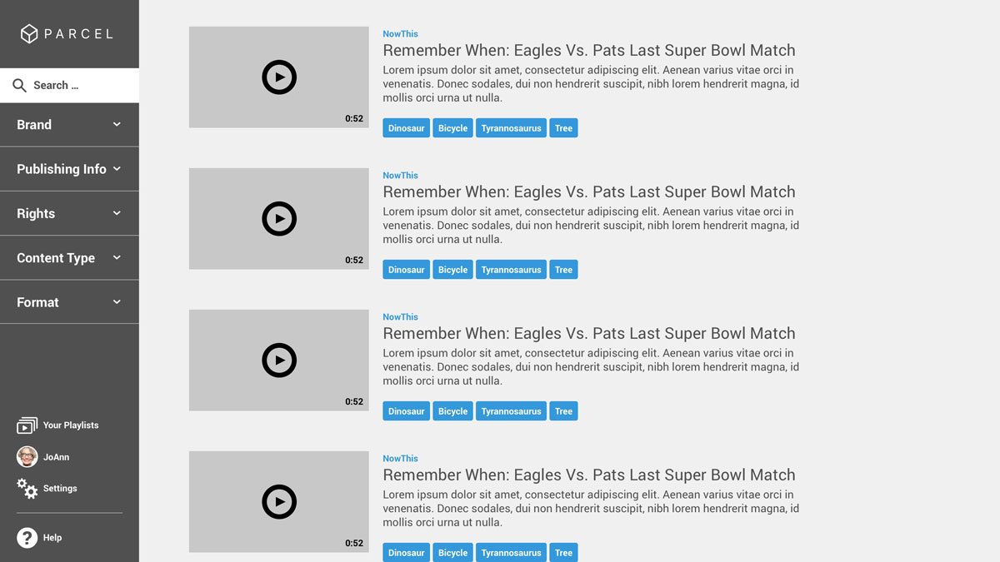
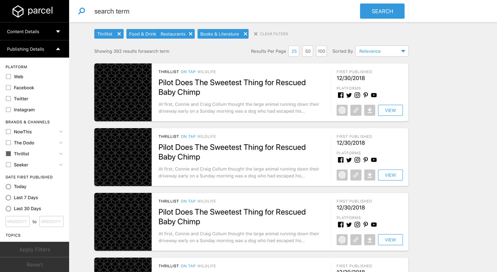
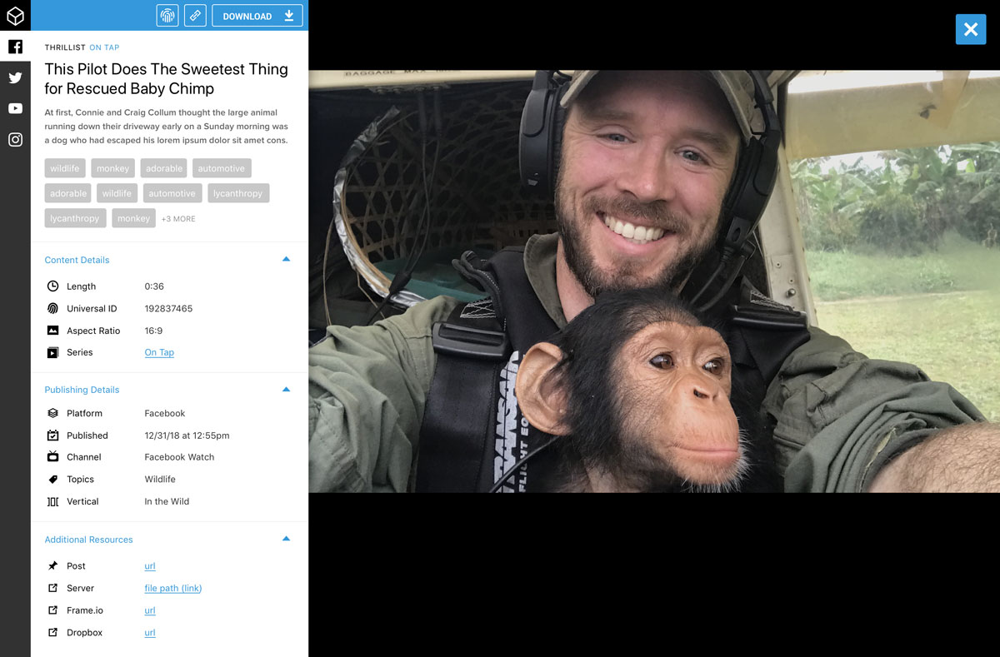
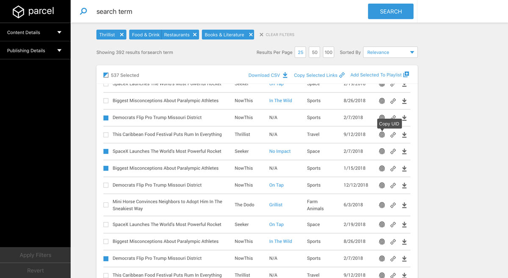
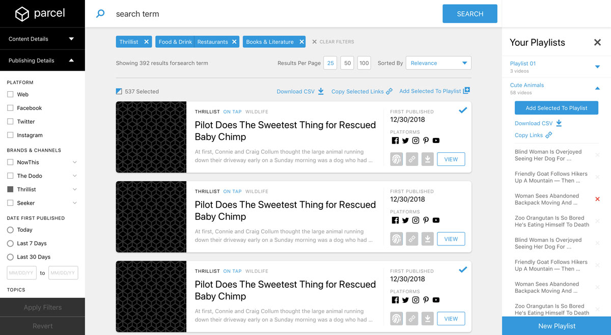

Group Nine's four brand archived videos in different ways, making them difficult to access later.
The Outcome
A tool allows six teams to find and reuse existing videos.
The Process
Research, Explore, Prototype, Test, Design
When Group Nine’s four brands combined to create one digital media company, they each had their own processes and archival methods.
But one of the more exciting parts of this merger was the promise of being able to license out existing content to new distribution partners, or to reuse other brands’ work to create new things.
To achieve this level of collaboration, it would be necessary to archive content in one place. We learned relatively quickly that existing media management tools wouldn’t meet our exact needs, and so we decided to build.
The Breakdown
The tool was meant to serve six teams across the company and required their buy-in to function, so researching their processes was critical.
We planned to release new features for the tool over time, so designs would have to be flexible enough to incorporate new functionality.
This would be the first time we attempted to use a newly-created design system my peer designed for our company’s internal tools.
I began by conducting user interviews with members of each of the six teams. From this, I learned how people created content, how they published it, distributed it, tracked its performance, and more. I learned how other teams redistributed evergreen videos, or studied past work to predict what new content would perform well. I also learned how yet another team worked with distribution partners to get our videos on new platforms.
From this, I was able to identify a few key motivations driving the need to find past work:
Figuring out if a story’s been covered, and if so, how.
Looking for evergreen content pertaining to a trending topic.
Looking for content that could be packaged together as a series
Initial Designs
The basic sitemap is very simple.
Search Page > Results Page > Video Details Page
The idea was that someone would access the search page, type a word or phrase, and receive a series of results matching that query. Very straightforward.
Still, a number of questions arose. Where should a search bar go? Where should filters go? Should filters and search results update immediately, or after a user command?
With the insights from my user research and these questions in mind, I began some simple explorations.



Above: Though we opted not to optimize for small screens out of the gate, I explored putting lots of information in a small space.
Left: I explored the use of a natural language form, intending to more accurately capture the sentiment driving a search. I also played with the location of filters and the search bar.
I explored the use of a natural language form, intending to more accurately capture the sentiment driving a search. I also played with the location of filters and the search bar.
Though we opted not to optimize for small screens out of the gate, I also explored putting lots of information in a small space.
Ultimately, I opted to place filters in the left rail and give the search bar prominence at the top of the page. I knew we’d have a large number of filters with complex options in several, and the left rail would give the filters more space to play.
Placing the search bar at the top of the results page is both familiar and offers prominence to the primary actionable feature on the page.
Following some of these decisions, I further fleshed out the design and got it to a point where I could create a simple prototype with hotspots in InVision.
I realized I was operating under a lot of assumptions, so I wanted to get some screens in front of our users and ask them to perform some basic tasks to see if my decisions were valid.
After a simple round of user testing, I proceeded to polish these designs.
The Results
What we came up with is an elegant solution with heavy behind-the-scenes magic working to ingest content and make it readily available when a user needs it. Users can either start a query by entering a search term, or simply by applying a filter without a search term.


This screen demonstrates both bulk selection in the results field and the introduction of a playlists in the right rail. The hope behind putting playlists to the right instead of on a separate screen was that users could more easily place results into their curated categories.
Pagination on the results page aims to help users remember where they found a piece of content that they’d previously glossed over or overlooked.
The details screen shows the video itself and all relevant metadata, including data associate with the specific platforms to which a piece of content was published.
All in all, this tool is useful for all six of the teams we worked with, and will incorporate more features shortly to be even more functional.
It was clear pretty early on that we wouldn’t be able to incorporate all of the features we wanted to initially. With this in mind, I designed screens with the intention of introducing our desired features later on. I also hoped this would make it flexible enough to incorporate features we hadn’t before considered.
Bulk Selection & Actions
Future iterations should include the ability to select results in bulk and perform actions on all of them. These actions could include downloading, or exporting metadata as a CSV.

This table view condenses results to fit more on a screen, and allows users to scan content more quickly.
Table View
Some teams needed to be able to work with search results in bulk. Complementing the bulk selection and actions feature, we wanted to create a table view that would feature more results in a single screen.

This screen demonstrates both bulk selection in the results field and the introduction of a playlists in the right rail. The hope behind putting playlists to the right instead of on a separate screen was that users could more easily place results into their curated categories.
Creating Playlists
We hoped to be able to incorporate the idea of playlists – curated groupings of content, either hand-chosen by or automated by set rules. The idea was that people could check these playlists for new, relevant content, instead of performing the same query repeatedly. Or else people could create playlists to share with distribution partners or potential advertisers as examples of our content.
Conclusion
The tool launched shortly after I left Group Nine and is continuing to go through iterations for the sake of becoming a robust content hub for teams across the company. I’m pleased with steps we took in this first iteration to get something valuable off the ground.
Strategy
Designing a new ad unit
From research to prototyping to testing, how I created an experimental ad unit that performs 5 times better than standard banners.